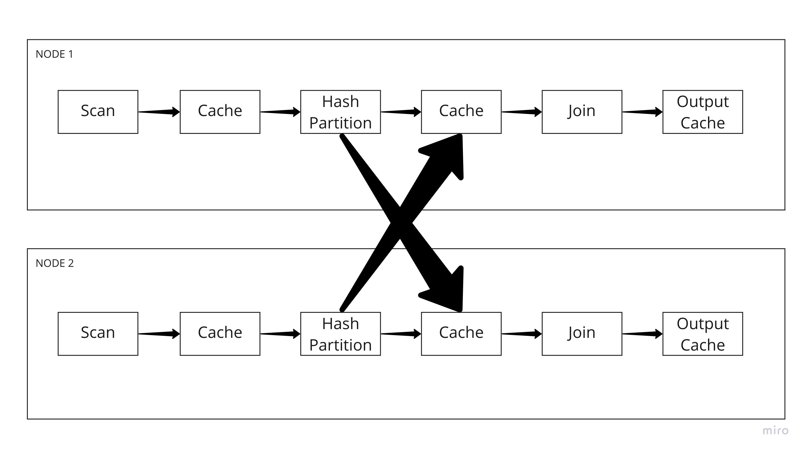

Execution Engine¶
DAG of Kernels and Caches¶
{kind=link}
The above image gives a good overview of how we try to organize various operations that need to be performed on one or more dataframes or groups of files. Every kernel is connected to ever other kernel only through a cache. The purpose of the cache is to allow dataframes to be moved between different types of memory so that we can scale to problems larger than the different types of memory upon which we will be operating. All Kernels implement the Kernel interface or one of their derived classes. A kernels purpose is to organize the flow and orchestration of performing complex distributed operations but it does not perform any of the execution itself. The final output of a DAG of kernels and caches thus arranged is a Cache itself.
When a user runs a query using bc.sql(query), that query is sent to Apache Calcite where it is parsed into relational algebra and then optimized. That optimized algebra comes back into python and can always be viewed by calling bc.explain(query). The optimized relational algebra is sent via dask to each of its workers along with sources of information (cudfs, or files).
On each worker the relational algebra is converted into a physical plan. Every relational algebra step maps to 1 or more physical plan steps. That physical plan is then used to construct an execution graph where every step in the physical plan corresponds to a kernel.
Relational algebra¶
The BlazingSQL engine executes a relational algebra plan. This plan is initially created by Apache Calcite, which in turn receives a SQL query. The initial relational algebra is converted into an physical plan, which is effectively a modified version of the original relational algebra plan, wherein some of the relational algebra steps is expanded into multiple steps.
SQL¶
select o_custkey, sum(o_totalprice) from orders where o_orderkey < 10 group by o_custkey
Relational Algebra¶
LogicalProject(o_custkey=[$0], EXPR$1=[CASE(=($2, 0), null:DOUBLE, $1)])
LogicalAggregate(group=[{0}], EXPR$1=[$SUM0($1)], agg#1=[COUNT($1)])
LogicalProject(o_custkey=[$1], o_totalprice=[$2])
BindableTableScan(table=[[main, orders]], filters=[[<($0, 10)]], projects=[[0, 1, 3]], aliases=[[$f0, o_custkey, o_totalprice]])
Physical Plan Single GPU¶
LogicalProject(o_custkey=[$0], EXPR$1=[CASE(=($2, 0), null:DOUBLE, $1)])
MergeAggregate(group=[{0}], EXPR$1=[$SUM0($1)], agg#1=[COUNT($1)])
ComputeAggregate(group=[{0}], EXPR$1=[$SUM0($1)], agg#1=[COUNT($1)])
LogicalProject(o_custkey=[$1], o_totalprice=[$2])
BindableTableScan(table=[[main, orders]], filters=[[<($0, 10)]], projects=[[0, 1, 3]], aliases=[[$f0, o_custkey, o_totalprice]])
Physical Plan Multi GPU¶
LogicalProject(o_custkey=[$0], EXPR$1=[CASE(=($2, 0), null:DOUBLE, $1)])
MergeAggregate(group=[{0}], EXPR$1=[$SUM0($1)], agg#1=[COUNT($1)])
DistributeAggregate(group=[{0}], EXPR$1=[$SUM0($1)], agg#1=[COUNT($1)])
ComputeAggregate(group=[{0}], EXPR$1=[$SUM0($1)], agg#1=[COUNT($1)])
LogicalProject(o_custkey=[$1], o_totalprice=[$2])
BindableTableScan(table=[[main, orders]], filters=[[<($0, 10)]], projects=[[0, 1, 3]], aliases=[[$f0, o_custkey, o_totalprice]])
The conversion of the relational algebra gets done by the function transform_json_tree in
PhysicalPlanGenerator.h.
This function gets called by build_batch_graph.
This new relational algebra plan is converted into a graph and each node in the graph becomes an execution kernel, while each edge becomes a CacheMachine.
The graph is created by ral::batch::tree_processor that has a function called build_batch_graph. This produces the actual graph object,
which is what contains all the execution kernels and CacheMachines. The graph has a function called execute() which is what actually starts the run() function of every execution kernel, each on its own thread.
Column/Table Wrappers¶
BlazingColumn¶
BlazingTable¶
BlazingTableView¶
Implements the same api as BlazingTable but wraps a cudf::table_view instead of
a vector of BlazingColumn.
Kernels¶
Every step in the physical plan maps to exactly one kernel. Kernels implement the interface defined above and are found in Join Kernels, Aggregation Kernels Order By Kernels, Filter Kernels, Project Kernels.
Each execution kernel is a Class which implements the kernel interface. All kernels have an input port and an output port. Each of which contains a map of named CacheMachines. A kernel might write to multiple outputs and may receive input from multiple inputs but they are all contained within the input and output ports.
Only in the TableScan and BindableTableScan kernels are the input ports not defined. In these two cases the kernels themselves generate data either by passing through a cudf or by reading files.
A kernel will have a run() function which starts its execution. It pulls data from its input ports, operates on them, then sends the results to its output ports. The ports are just maps of name to CachedMachine.
All kernels basically take data in batches from one or more input cache machines, do some work, and put results into an output cache machine. Almost all work done is done in batches, and usually the way the kernels iterate through those batches is via some form of a DataSequencer or which there are 4 kinds (these are defined in Join Kernels): BatchSequence This is the standard data sequences that just pulls data from an input cache one batch at a time BatchSequenceBypass This data sequencer can pull data from a CacheMachine, but without decacheing the data. Serving as a bypass to take data from one input to an output without decacheing. ExternalBatchColumnDataSequence This data sequences connects a HostCacheMachine to a server receiving certain types of messages, so that basically the data sequences is effectively iterating through batches received from another node via out communication layer.
Caches¶
CacheData¶
There are different kinds of CacheData at the moment. GPU, CPU, LOCAL_FILE and GPU_WITHMETADATA. The last of these being use exclusively in message routing. Any implementer of CacheData must implement:
virtual std::unique_ptr<ral::frame::BlazingTable> decache() = 0;
The purpose of this class is that you can always call decache() on a CacheData and get control of a BlazingTable that you own whose data is either moved in the case of a GPU version, or brought into a GPU dataframe in the case it is a non GPU version.
The LOCAL_FILE implementation uses ORC files as a temporary storage for data.
WaitingQueue¶
Stores CacheData for us. Every CacheMachine has a WaitingQueue whose purpose it is to hold the CacheData until they are needed by a kernel. Many of its methods are waiting operations of the nature get_or_wait() which will wait on a condition variable until something can actually be pulled from the WaitingQueue.
CacheMachine¶
Cache Machines are an abstraction built on top of WaitingQueues that manage the logic of knowing when a dataframe should stay on the gpu or be moved to RAM or disk.
When you add data into a CacheMachine, it checks the memory consumption of the node by asking the memory resource (see below). If the consumption is below a certain threshold, then the data is maintained in GPU memory. It is converted into a GPUCacheData and added to the CacheMachine. If consumption is above the device memory threshold, then it checks the next tier in the CacheMachine, the CPU cache. It checks the memory consumption of the CPU memory resource. If it is below that threshold, it converts the BlazingTable into a CPUCacheData, where it copied all the data to host. If the CPU memory consumption is above a certain threshold, then it goes into the next tier, the Disk Cache. For the disk cache, the data is placed in an ORC file and a CacheDataLocalFile is created to keep track of it.
Aside from the standard CacheMachine, there are two specialty types: HostCacheMachine and ConcatenatingCacheMachine. The HostCacheMachine is only used to place data received by other nodes and the ConcatenatingCacheMachine is used as the output of TableScans. The ConcatenatingCacheMachine will concatenate batches so that the resulting batch is not too small. This is configurable, and its done to increase performance. Operating on really small batches can be detrimental to performance.
CacheMachines and CacheData are defined CacheMachine.h
Memory Management¶
BlazingMemoryResource¶
BlazingSQL has a BlazingMemoryResource interface that it uses for tracking memory consumption. There are three implementations blazing_device_memory_resource, blazing_host_memory_resource and blazing_disk_memory_resource to manange to keep track of GPU, HOST and DISK memory consumption.
The blazing_device_memory_resource internally has a internal_blazing_device_memory_resource which implements the rmm::mr::device_memory_resource interface. When a BlazingContext() is first created it will create a new internal_blazing_device_memory_resource and set it as the default resource using rmm::mr::set_current_device_resource.
What form the internal_blazing_device_memory_resource takes is dependent on what parameters are passed to BlazingContext() parameters allocator and pool. Different allocators settings can make the allocator use different underlying RMM allocator types. If the allocator is set to existing, then it will take the current default allocator that has been set and wrap it with internal_blazing_device_memory_resource
The blazing_host_memory_resource and blazing_disk_memory_resource only track allocations and deallocations when BSQL caches and decaches data in the CacheMachines.
Whenever data enters a CacheMachine, it will check the memory consumption of the three BlazingMemoryResource to see where the CacheData should reside. This is one mechanism employed by BSQL to manage memory consumption.
MemoryMonitor¶
BlazingSQL has a MemoryMonitor class that it instantiates for every query that is run. This MemoryMonitor will wake up every 50ms (configurable by MEMORY_MONITOR_PERIOD) and check the GPU memory consumption as tracked by blazing_device_memory_resource. If memory consumption is too high, it will traverse the execution graph from the last node (final output) to the first nodes (TableScans) downgrading CacheData as it can, to bring GPU memory consumption underneath its threshold. Downgrading CacheData means, taking a GPU CacheData and moving the data to Host or Disk.
The MemoryMonitor helps ensure that memory GPU consumption does not get too high and therefore helps prevent OOM errors.